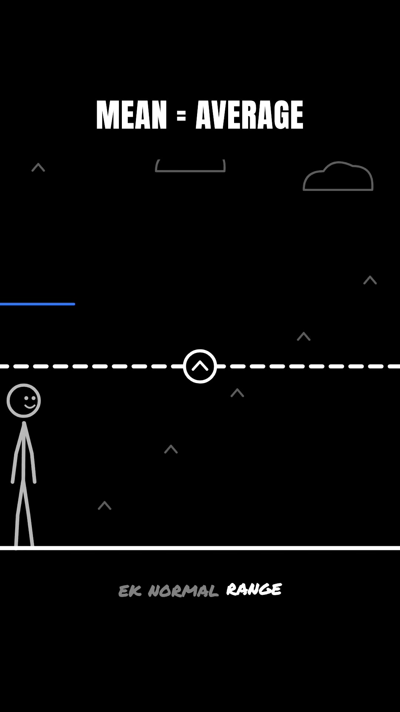
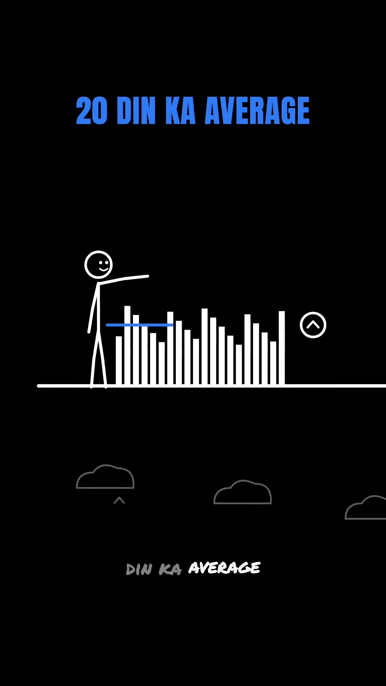
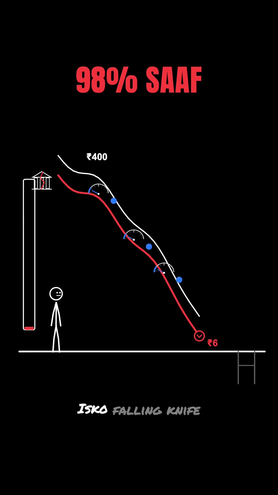
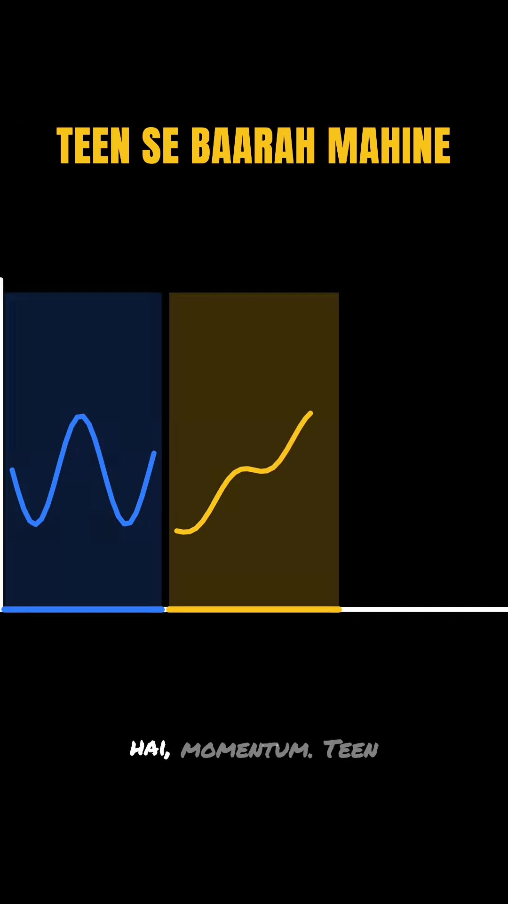

Finance · Quant-Trading
Mean Reversion & Z-Score Trading: Statistical Arbitrage & Falling Knife Defense
Key Takeaways
- Statistical Mean Reversion: In short time horizons, market participants overreact to temporary news cycles. Asset prices deviate significantly from their moving average, creating high-probability mean-reversion snap-back trades.
- Quantitative Entry Formula (Z-Score < -2): Calculate the 20-day moving average and standard deviation. When the Z-score drops below -2.0 (>2 standard deviations depressed), enter a long position; exit when price crosses back to the 20-day mean.
- The "Falling Knife" Trap: Mean reversion breaks down when the underlying fundamental valuation shifts permanently (e.g., YES Bank 2018 crash from ₹400 to ₹6, down 98%). The moving average itself collapses downward with the price.
- Dual Exit Protection: Professional quant desks hedge mean-reversion failure by enforcing both a traditional Stop-Loss (price limit) and a strict Time-Stop (if reversion does not occur within N days, exit unconditionally).
- Timeframe Horizon Matrix: Mean reversion dominates on ultra-short horizons (1 week to 1 month) and secular cycles (3 to 5 years). Momentum dominates medium horizons (3 to 12 months). Blending timeframes creates unhedged losses.
1. The Mechanics of Mean Reversion
In quantitative finance, mean reversion operates on the premise that asset price distributions exhibit central tendency over specific lookback windows. While trend-following (momentum) bets on continued directional expansion, mean reversion bets on behavioral exhaustion.

2. Quantitative Rule & Z-Score Formula
Quantitative desks do not rely on subjective chart patterns. They normalize distance from the mean into a dimensionless statistical metric known as the Z-Score:
Z-Score = (Current Price - 20-Day SMA) / 20-Day Standard Deviation (σ)

Execution Rules:
- Entry Condition: Buy when
Z-Score ≤ -2.0. - Exit / Take-Profit Target: Close position immediately when price reverts to touch the 20-day Simple Moving Average (
Z-Score = 0). - Trade Profile: Modest profit per trade, short holding periods, and high statistical win rate.
3. The Fatal Risk: The "Falling Knife" Phenomenon
The primary cause of catastrophic drawdown in naive mean-reversion algorithms is confusing a temporary sentiment overreaction with a structural fundamental collapse.

| Market Condition | Underlying Driver | Algorithm Result |
|---|---|---|
| Sentiment Panic | Negative headline, quarterly noise, macro shock | Mean Reversion Wins: Price snaps back to historic average. |
| Structural Fraud / Solvency | NPA defaults, management arrest, accounting fraud | Falling Knife Trap: Moving average drifts down; massive loss. |
4. Professional Defense: Price Stops & Time Stops
Institutional quant desks protect against structural breakdown using two complementary risk controls:
- Hard Price Stop-Loss: Predefined percentage or ATR (Average True Range) risk boundary below entry price.
- Strict Time-Stop: If mean reversion does not materialize within a specific number of trading sessions (e.g., 5 to 10 trading days), exit the position at market regardless of profit or loss. Prolonged stagnation indicates the baseline mean is resetting lower.
5. The Multi-Timeframe Regime Matrix
Both momentum and mean-reversion are statistically valid market regimes; failure occurs when traders apply the wrong strategy to the wrong time horizon.

| Time Horizon | Dominant Market Regime | Behavioral / Quantitative Reason |
|---|---|---|
| 1 Week to 1 Month | Mean Reversion | Retail and algorithmic short-term overreaction to earnings/news noise. |
| 3 to 12 Months | Momentum | Institutional capital accumulation and persistent trend-following inflows. |
| 3 to 5 Years | Mean Reversion | Macro business cycle normalization, valuation multiples resetting to historical medians. |
6. Next Frontier: Pairs Trading
When an individual stock's mean drifts unpredictably, quantitative traders eliminate single-stock idiosyncratic risk by shifting to Pairs Trading (statistical arbitrage across two co-integrated equities in the same sector, trading the spread between them).
Original Source Reference
Instagram Reel: https://www.instagram.com/reel/Det_sAFyGdQ/
Creator: @_whyxshubh_ (Finance X Tech X Shubh)
Series: Part 2 of 20 Quant Strategies